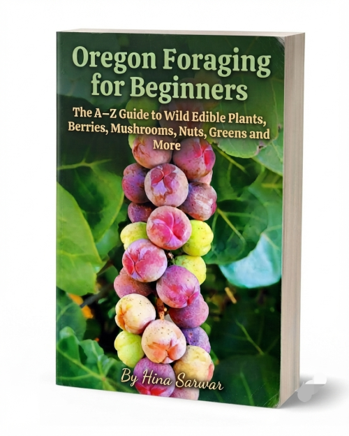

Oregon Foraging For Beginners
Product profile · Marketplace data 2026-10-09 · Sales-page research 2026-10-09 · Categories: Hobby & Craft, Survival

Marketplace record
| Product type | E-books |
|---|---|
| Price | $17.99 (Single payment) |
| Affiliate commission | 70% |
| Refund window | Per the vendor's sales page — check the official page before buying |
| Vendor | Book2Book (listed since 2026-08-28) |
| Marketplace stats* | Cart conversion — · cancel rate — · affiliate earnings/sale $12.59 |
* Vendor-side marketplace statistics reported by Digistore24; they depend on traffic quality and are not a forecast.
Vendor's marketplace description
Earn 70% Commissions on a High-Converting Oregon Foraging and Wild Food Offer Product Title: Oregon Foraging For Beginners Niche: Nature & Outdoors / Sustainable Living / Wild Foods & Wilderness Survival Product Price: $17.99 USD Your Commission: 70% on every single sale Why Promote This Product? The Pacific Northwest sustainable living, homesteading, and outdoor exploration niche is experiencing …
From the vendor's sales page
Page title: Oregon Foraging For Beginners (Ebook) - Digistore24
Section headlines
- Discover Oregon's Wild Edible Foods With Confidence
- (Ebook)
- Have you ever walked through Oregon's forests, trails, or countryside and wondered:
- Inside This Guide, You'll Discover:
- No More Random Guessing
- Get the Complete Oregon Foraging Beginner's Package Today
- Main Book: Oregon Foraging for Beginners
- (Ebook)
- #Bonus 1: Oregon Seasonal Foraging Calendar
- (Printable PDF)
Opening copy
Have you ever walked through Oregon's forests, trails, or countryside and wondered:
The problem is that foraging can feel confusing for beginners. There are hundreds of plants, berries, mushrooms, and other wild foods_and guessing can be risky.
This practical, easy-to-follow guide helps you build your foraging knowledge step by step_without overwhelming you with unnecessary information.
Prices mentioned on the page: $17.99 · $10
Guarantee language found: “60” — always confirm the current terms on the official page before relying on it.
Research method: raw HTML fetch · 1256 words on page · quality: rich · researched 2026-10-09. Full research file (MD) ↗
Where to check it out
Read the vendor's full sales page (current price, guarantee terms and bonuses are listed there):
View official sales page
That link is an affiliate link — if you buy through it we earn a commission from the vendor at no extra cost to you.